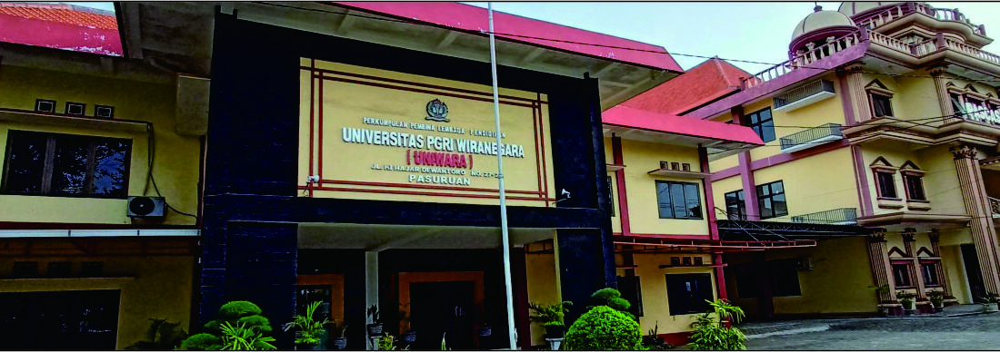

Universitas pgri wiranegara
Universitas PGRI Wiranegara merupakan perguruan tinggi swasta yang mengalami perubahan bentuk dari Sekolah Tinggi Keguruan dan Ilmu Pendidikan PGRI Pasuruan (STKIP PGRI Pasuruan). Perubahan dari bentuk STKIP PGRI Pasuruan menjadi Universitas PGRI Wiranegara ditetapkan pada tanggal 18 Pebruari 2020 sesuai dengan Surat Keputusan Menteri Pendidikan dan Kebudayaan Republik Indonesia Nomor 259/M/2020. Dalam surat Keputusan tersebut, Universitas PGRI Wiranegara menyelenggarakan beberapa Program Studi, antara lain:
Universitas PGRI Wiranegara yang selanjutnya disebut UNIWARA merupakan perguruan tinggi yang diselenggarakan oleh Perkumpulan Pembina Lembaga Pendidikan Perguruan PGRI Pasuruan (PPLPP PGRI Pasuruan).
MEWUJUDKAN PERGURUAN TINGGI YANG BEREPUTASI BIDANG IPTEK, BERBUDAYA, DAN BERJIWA PATRIOTIK
Menyelenggarakan Pendidikan dan pengajaran berkualitas dan berjiwa patriotik yang relevan dengan perkembangan IPTEK;
Menyelenggarakan penelitian untuk mengembangkan IPTEK dengan memperhatikan aspek kearifan lokal;
Menyelenggarakan pengabdian kepada masyarakat selaras dengan program pembangunan pemerintah daerah untuk meningkatkan kualitas hidup masyarakat;
Menyelenggarakan dan mengembangkan tata kelola univeristas yang unggul dengan prinsip objektif, akuntabel, transparan dan kolaborasi.
Mewujudkan Pendidikan dan pengajaran berkualitas dan berjiwa patriotik yang relevan dengan perkembangan IPTEK;
Menghasilkan lulusan yang berkualitas dengan berjiwa patriotik sesuai bidang ilmu;
Menghasilkan penelitian untuk mengembangkan IPTEK dengan memperhatikan kearifan lokal;
Menghasilkan publikasi karya ilmiah yang bereputasi nasinal dan internasional;
Menghasilkan pengabdian kepada masyarakat yang selaras dengan program pembangunan pemerintah daerah untuk meningkatkan kualitas hidup masyarakat;
Mewujudkan tata kelola universitas yang unggul dengan prinsip objektif, akuntabel, transparan dan kolaborasi.
Sasaran Misi 1 : Pendidikan dan pengajaran yang berkualitas, pendidikan dan pengajaran yang berjiwa patriotik, lulusan yang berjiwa patriotik;
Sasaran Misi 2 : Penelitian untuk mengembangkan IPTEK dengan memperhatikan kearifan lokal, meningkatkan publikasi nasional dan internasional, meningkatnya pertemuan ilmiah nasional dan internasional
Sasaran Misi 3: Pengabdian kepada masyarakat yang selaras dengan program pembangunan pemerintah daerah untuk meningkatkan kualitas hidup masyarakat.
Sasaran Misi 4: Terwujud tata kelola univerutas berdasarkan prinsip objektif, akuntabel, transparan dan kolaborasi, terjalin kerjasama tingkat nasional dan internasional.
Survei membuktikan sebanyak 35 persen koresponden tidak puas dengan kinerja PSSI dalam penanganan Tragedi Kanjuruhan. Pada survei yang digelar Football Institute juga memunculkan calon kuat Ketua Umum PSSI pengganti Mochamad Iriawan alias Iwan Bule pada Kongres Luar Biasa (KLB) mendatang.